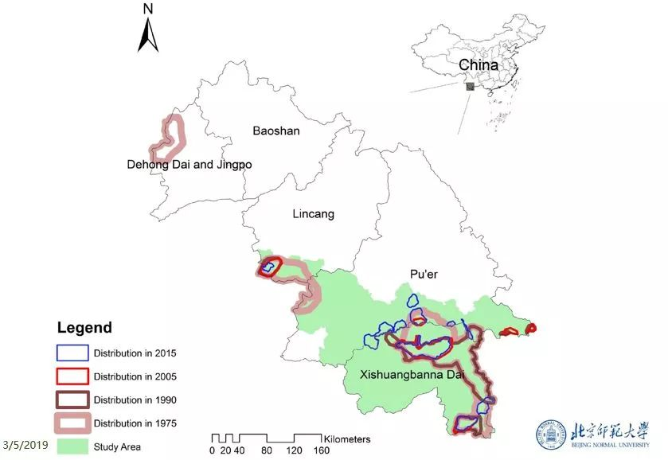
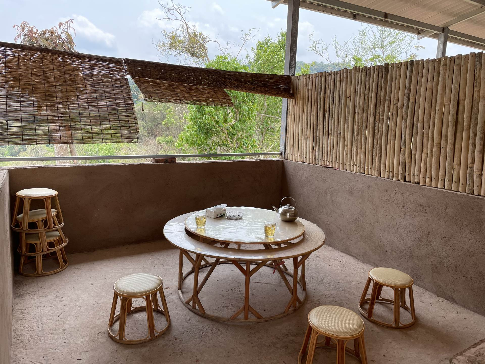

At present, there are about 250 to 300 Asian elephants in China, which are distributed in southern Yunnan, including Xishuangbanna National Nature Reserve, Nangunhe Nature Reserve, Simao Nature Reserve, etc. Asian elephants are China's first-level protected wild animals and are listed as endangered species by the International Union for the Conservation of Nature and Natural Resources (IUCN).
Most Asian elephants like to live in flat mountain valleys at low altitudes below 1,000 meters, where vegetation types are generally bamboo and broad-leaved mixed forests, shrubs, or alpine meadows. Their food sources range widely, including wild plants and crops. Due to their large size, Asian elephants eat a tremendous amount, consuming an estimated 150kg of plants a day. It is interesting to note that Asian elephants live in matrilineal societies, where the majority of the herd is composed of females and young, while the adult males live alone. Being highly intelligent mammals, they are also able to remember fixed food gathering locations and return repeatedly for food.

Conflicts between elephants and humans have intensified as the area of forest which is suitable for wild elephants shrinks, the habitats of humans and elephants overlap, and the deterrence from humans to elephants diminish due to the elephant-protection requirements. Experts believe that besides improving the early warning mechanism and implementing the insurance system, it is also vital to prevent humans from encroaching on the living areas of wild elephants.
Resolving human-elephant conflicts is a systematic project. In recent years, local authorities have taken a series of preventive measures, such as increasing public promotion, enhancing monitoring and early warning, building food bases for elephants, introducing wild elephant accident insurance mechanisms. All measurements above achieved positive results. Governments, companies, and individuals are constantly exploring solutions to make people live in harmony.
